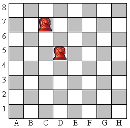

|
Совсем недавно Вася занялся программированием и решил реализовать собственную программу для игры в шахматы. Но у него возникла проблема определения правильности хода конем, который делает пользователь. Т.е. если пользователь вводит значение «C7-D5», то программа должна определить это как правильный ход, если же введено «E2-E4», то ход неверный. Так же нужно проверить корректность записи ввода: если например, введено «D9-N5», то программа должна определить данную запись как ошибочную. Помогите ему осуществить эту проверку!
Входные данные В единственной строке входного файла INPUT.TXT записан текст хода (непустая строка), который указал пользователь. Пользователь не может ввести строку, длиннее 5 символов.Выходные данные В выходной файл OUTPUT.TXT нужно вывести «YES», если указанный ход конем верный, если же запись корректна (в смысле правильности записи координат), но ход невозможен, то нужно вывести «NO». Если же координаты не определены или заданы некорректно, то вывести сообщение «ERROR». |
 |
|---|
| № | INPUT.TXT | OUTPUT.TXT |
|---|---|---|
| 1 | C7-D5 | YES |
| 2 | E2-E4 | NO |
| 3 | BSN | ERROR |